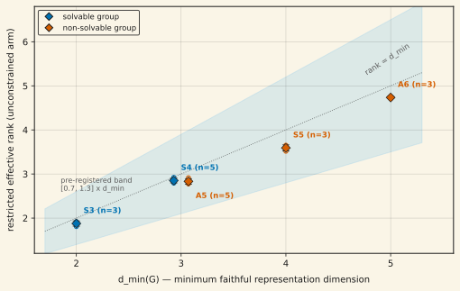
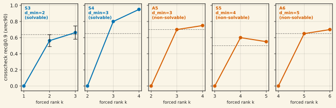

Every finite group G has a minimum dimension d_min(G) below which no faithful orthogonal representation exists — a theorem-grade lower bound on how much state a model needs to represent the group's elements. We trained a fast-weight model on group-word recovery for five groups spanning d_min ∈ {2, 3, 3, 4, 5} and asked whether SGD recruits exactly that much rank. Three results. Correlation: the unconstrained model's restricted effective rank tracks d_min (Spearman ρ = 0.9747, the maximum achievable given a designed tie; all 19 cells inside the pre-registered [0.7, 1.3]·d_min band). Dissociation: the marquee pair S4 vs A5 — same d_min = 3, opposite solvability — lands together on dimension (Welch TOST declares equivalence at margin ±0.5; difference +0.019). Causation: force-capping the model's rank at k = d_min − 1 drives basis-invariant recovery to exactly 0.000 in all five groups, while k = d_min recovers anchor-level performance — a step, not a ramp. The causal cells are single-seed for four groups (S3, the marginal one, was seed-extended to n = 4 and confirmed). Preprint in preparation.
01Why finite groups
Claims of the form "the model uses rank k" are easy to get wrong. A rank-1 matrix can smuggle d items past an argmax readout; a full-attention model can satisfy "hold K items" with K positions at rank 1 each. To make within-representation rank load-bearing, the task's rank requirement has to be a theorem, not an assumption.
Finite groups give exactly that. Representation theory fixes, for each group G, the minimum dimension d_min(G) of a faithful real orthogonal representation: no matrix family of smaller dimension can represent all of G's elements distinctly while composing correctly. We use five groups:
| group | |G| | d_min | solvable | realization |
|---|---|---|---|---|
| S3 | 6 | 2 | yes | triangle symmetries |
| S4 | 24 | 3 | yes | cube rotations |
| A5 | 60 | 3 | no | icosahedral rotations |
| S5 | 120 | 4 | no | zero-sum hyperplane in ℝ⁵ |
| A6 | 360 | 5 | no | zero-sum hyperplane in ℝ⁶ |
The model learns per-word operators for group elements; recovery is scored on held-out evaluation words against the true representation matrices. The decisional metric throughout is basis-invariant: an orthogonal Procrustes rotation is fitted on a disjoint fit set before scoring, and we report the fraction of evaluation words whose corrected readout exceeds cosine 0.9 against the true matrix (written xrec90 below). The naive scale-only variant of this metric was proven brittle by an oracle-injection test — a mathematically perfect model can score as low as 0.01 on it — and is never used for decisions.
02Correlation: recruited rank tracks d_min

Seed-level means: S3 1.877 ± 0.060 (n=3), S4 2.852 ± 0.054 (n=5), A5 2.832 ± 0.062 (n=5), S5 3.591 ± 0.069 (n=3), A6 4.736 ± 0.023 (n=3). The model has d_min + 2 dimensions available in every case and consistently declines to use the slack.
This leg is pre-registered as corroborating-only: restricting the readout to d_min dimensions partially favors rank ≈ d_min by construction for near-orthogonal blocks. The causal weight sits in §04.
03Dissociation: dimension, not solvability
S4 (solvable) and A5 (non-solvable) share d_min = 3. If recruited rank were tracking computational difficulty — solvable groups admit decompositions that non-solvable groups provably do not — the pair should split. It does not: the Welch TOST on restricted effective rank (n=5 per side, pre-registered margin ±0.5 rank-units) declares equivalence with a difference of +0.0194 (se 0.0368; both one-sided tests ~7× past the critical value).
04Causation: the razor
Correlation admits deflationary readings. The causal test force-caps the model's per-word operator rank at exactly k = d_min − 1, d_min, and d_min + 1 during training, per group, holding everything else fixed. If d_min is genuinely the binding constraint, recovery should be impossible one dimension below it and unimpaired at it — a step function.

At k = d_min: S4 reads 0.800 (anchor 0.650), A5 0.700 (0.700), S5 0.600 (0.500), A6 0.650 (0.650). S3's k = d_min cell at seed 0 (0.450) fell inside the pre-registered ±0.05 marginality window against its bar (0.9 × anchor = 0.495), which triggered the pre-registered seed extension: seeds 1–3 read 0.550, 0.600, 0.650, for a 4-seed mean of 0.5625 — above the bar. The necessity leg is noiseless: 0.000 at k = d_min − 1 in every seed of every group. Verdict: causal confirmation in 5/5 groups; the headline never depended on the S3 extension (it moved S3 from "marginal, routed" to "confirmed").
05What went wrong first (and why the archive matters)
The original 58-cell sweep could not have detected this result: an instrument bug (the "ambient-identity capacity tax") padded the training target with an identity block, so every rank-capped arm paid two dimensions of its budget before touching the group representation, and 37 of 39 force-rank cells tracked the resulting √(k/d_state) ceiling to within 0.07. That sweep's causal verdict was recorded as inconclusive-diagnosed, the padding was fixed (zeros instead of identity, making the target rank exactly d_min), and every causal number above comes exclusively from the post-fix archives. The correlation leg (§02) is unaffected — the unconstrained arm was never rank-capped.
06Limitations
- Single-seed causal cells. S4, A5, S5, A6 razor cells are n=1 (the campaign's flanking-cell convention); only S3 is n=4. The zero at k = d_min − 1 is categorical and replicated wherever seeds exist, but the recovery-side values carry single-seed uncertainty for four groups.
- S3 is noisier than its mean. Per-seed, S3's k = d_min cell clears its own seed's 0.9×anchor bar in only 2 of 4 seeds — driven by anchor noise (S3's anchor swings 0.550–0.800 across seeds). The pre-registered decision uses the fixed launch-time bar (0.495); recomputing the bar from the 4-seed mean anchor would put the mean marginally below it (−0.011). Both readings are disclosed in the design record.
- Convergence health. All ten k = d_min − 1 cells fail the convergence health gate — expected (a rank-starved model cannot converge to the target), but it means the zeros are "cannot represent," not "converged elsewhere." Two groups' anchor-side cells sit just under the health bar (soft convergence at the 8K-step groups), disclosed as non-blocking because the razor reading is anchor-relative.
- Scope. This is single-episode associative recovery of group structure, not multi-hop reasoning over held-out relational structure. The reasoning-transfer stage this gates is designed but not run.
07Reproducibility
Raw per-cell JSONs, harvest analysis scripts, and MD5 manifests are archived in the project repository under experiment-runs/2026-07-09_capability_sweep_harvest/ (correlation + equivalence legs), experiment-runs/2026-07-09_m3fix_harvest/ (post-fix causal cells), and experiment-runs/2026-07-09_m3fix_s3ext/ (S3 seed extension). The figure-generation scripts for this page are at assets/plots/generate_rank_law.py. Total realized compute for the numbers on this page: ≈4.3 H100-hours.